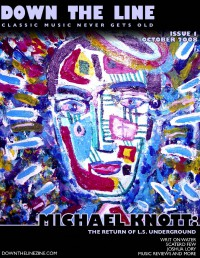

Down The Line, Oct 2008, #1
| Cover |
|---|
|  |
 Online Exclusively Online Exclusively |
| Writers in this Issue |
| Crosslin, Matt Ruff, Steve |
Mike Knott & L.S. Underground
Cover Feature:- "The Return of LS Underground: The Music and The Message, The Heaviest to Date" by Steve Ruff
- "9 Questions for Joshua Lory of L.S.U." by Matt Crosslin
- "Keeps the Music Flowing After All These Years" by Matt Crosslin
- "Allan Aguirre & Scaterd Few: History and Hardship" by Steve Ruff
- Mike Knott - Comatose Soul by Steve Ruff
- Writ on Water - A Wingless King by Matt Crosslin
- Struck Last May - 16 Flowers by Steve Ruff
- The Rovers Three - A Kind O' Irish Band by Steve Ruff
- Bill Mallonee - Lower Case [mini EP] by Steve Ruff
- The 77s - Ninety Nine by Steve Ruff
- The 77s - Holy Ghost Building by Steve Ruff
- Aradhna - Amrit Vani by Matt Crosslin
- Chris Freeman - City of God by Matt Crosslin
- "3 Bears Cafe, Marietta, GA, June 20, 2008" by Steve Ruff
- "Eddie's Attic, Decatur, GA, August 13, 2008" by Steve RuffBill Mallonee & Muriah Rose
This is the first issue of Down The Line.
Relevant Links
For more information about Down The Line, or to subscribe, visit .This issue is available exclusively online.
© 2011 CMnexus. Last updated September 2019. Contact: editor -AT- cmnexus -DØT- org About